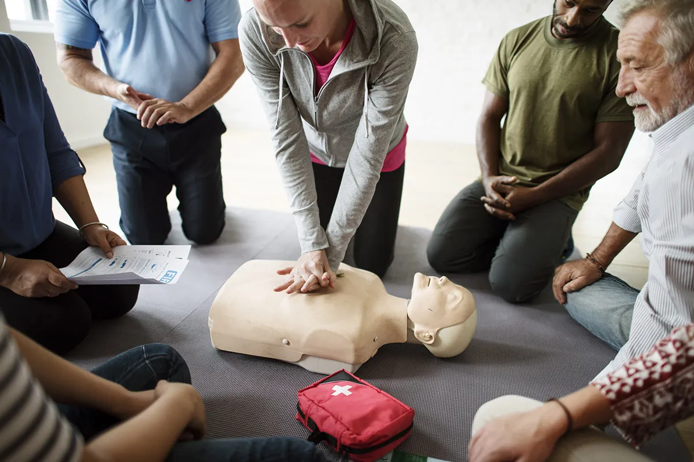
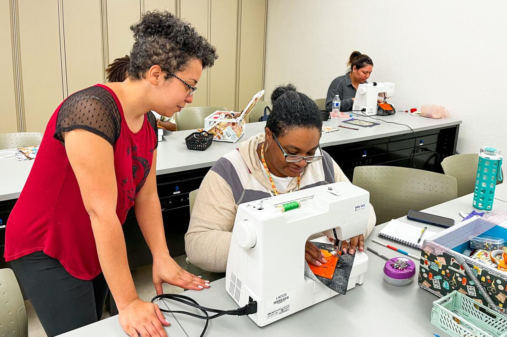

OUR SIX-MONTH COURSES!
FIRST AID
Participants in this six-month training gain the skills necessary to handle common medical emergencies. It addresses burn and fracture therapy, wound care and bleeding control, and emergency scene management, which includes triage and safety assessment. Along with learning how to use an AED, participants will also learn CPR skills for adults, children, and newborns. By teaching participants how to manage choking and clogged airways, the training addresses respiratory distress and makes sure they are equipped to save lives until expert aid arrives.
SEWING
This six-month program offers thorough instruction in clothing modifications and tailoring. In addition to learning how to thread and use a sewing machine, participants will gain practical skills including sewing buttons, zips, hems, and seams. In order to give students the technical and artistic abilities required for tailoring, the course also covers designing and creating new items as well as altering pre-existing clothing.
LANDSCAPING
This course provides comprehensive landscaping instruction for both new and existing gardens over a period of six months. Participants will gain knowledge on how to choose and maintain both native and exotic trees and plants, balance plant placements for aesthetic appeal, and create useful garden designs. In order to guarantee that participants can design harmonious, visually appealing outdoor areas, the course also covers the incorporation of fixed structures such as fountains, statues, benches, and built-in braais.
LIFE SKILLS

The goal of this six-month course is to give learners the fundamental abilities they need to get by in everyday life. It equips participants with the knowledge they need to recognise their rights at work by covering practical topics like opening a bank account and comprehending fundamental labour laws. The training also emphasises enhancing basic literacy in reading, writing, and arithmetic, which equips students with the self-assurance and fundamental abilities required to manage important life activities.
OUR SIX-WEEK COURSES!
CHILD MINDING

Essential skills for basic newborn and child care are taught in this six-week course. It addresses the unique requirements of toddlers, seven months to a year, and newborns from birth to six months. The significance of educational toys in child development will also be covered, empowering participants to provide a stimulating and caring environment for kids of all ages.
COOKING
Participants in this six-week workshop will learn how to cook wholesome family meals. The many kinds of proteins, carbs, and vegetables, as well as how to balance them in meal planning, are covered in the course along with the nutritional needs for keeping the body healthy. Meal preparation and cooking skills are covered in hands-on workshops to guarantee that participants can produce wholesome and filling meals for the entire family.
GARDEN MAINTENANCE

This six-week course covers the fundamentals of caring for a home garden. Participants will gain knowledge about water limitations as well as the unique requirements for watering both native and exotic plants. The course equips participants with the knowledge and abilities necessary to manage a beautiful and healthy garden by covering pruning, propagation, and planting strategies for various plant species.